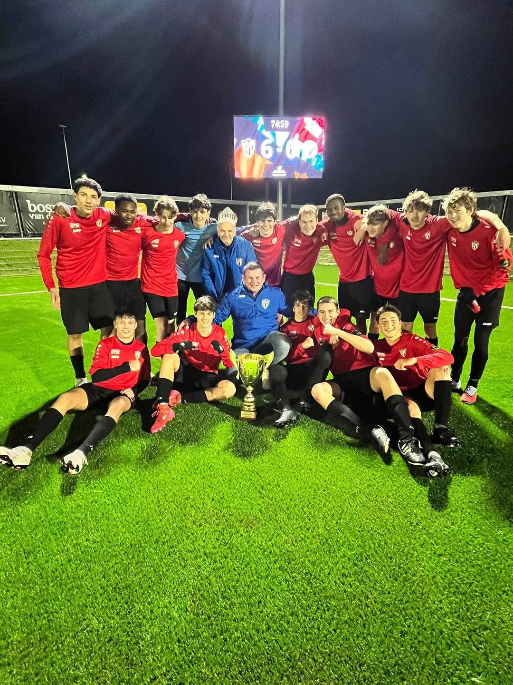
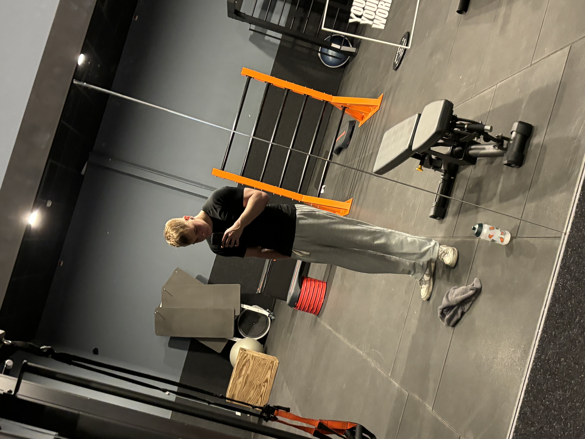

Mijn vrije tijd
In mijn vrije tijd ben ik graag bezig met verschillende activiteiten. Naast mijn studies vind ik het belangrijk om ook tijd te maken voor hobby’s en interesses die mij helpen ontspannen en mezelf verder te ontwikkelen. Mijn belangrijkste hobby’s zijn voetbal, fitness en gamen. Deze activiteiten zorgen ervoor dat ik zowel fysiek als mentaal actief blijf.
Hobby’s zijn voor mij niet alleen een manier om plezier te hebben maar ook een manier om mijn vaardigheden te ontwikkelen die ook in het dagelijkse leven of op de werkvloer van pas kunnen komen. Door sport en andere activiteiten leer ik bijvoorbeeld samenwerken, doorzetten en snel beslissingen nemen.
Sport: Voetbal en Fitness
Een van mijn grootste hobby’s is voetbal. Ik speel 3 dagen voetbal in een week waarvan 2 trainingen en 1 wedstrijd . Tijdens het voetballen werk je samen met je ploeg om een gezamenlijk doel te samen te bereiken(Winnen). Dit betekent dat communicatie en teamwork zeer belangrijk zijn. Deze vaardigheden zijn ook belangrijk op de werkvloer waar samenwerken met collega’s vaak nodig is om goede resultaten en goede projecten te maken.
Naast voetbal ga ik ook regelmatig naar de gym. Vier keer per week train ik om mijn conditie en kracht te verbeteren. Tijdens het trainen probeer ik altijd het beste uit mezelf te halen. Soms betekent dat dat je nog een extra herhaling kan doen of net iets langer kan doorgaan. Dit laat zien dat ik doorzettingsvermogen heb en niet snel opgeef wanneer iets moeilijk wordt.


Andere interesses
Naast sport besteed ik ook een deel van mijn vrije tijd aan gamen. Ik speel regelmatig verschillende soorten games en volg ook streams online. Gamen helpt mij om snel te reageren en strategisch na te denken. In veel games moet je namelijk snel beslissingen nemen en problemen oplossen.
Daarnaast kan gamen ook teamwork bevatten vooral bij online multiplayer games. Net zoals bij sport moet je goed kunnen communiceren met andere spelers en samenwerken om het doel te bereiken. Deze vaardigheden kunnen ook nuttig zijn in andere situaties dan alleen werk zoals groepsprojecten tijdens mijn studie. of bij andere zaken in het dagelijks leven.
Bovendien vind ik het leuk om nieuwe spellen uit te proberen en mijn vaardigheden te verbeteren. Het competitieve aspect van gamen motiveert mij om steeds beter te worden en doelen te stellen die ik opnieuw kan verbeteren. Ook leer ik veel van anderen bijvoorbeeld door strategieën of tips te delen tijdens het gamen. Zo combineer ik plezier met persoonlijke ontwikkeling.
Naast gamen en sport vind ik het belangrijk om sociale contacten te onderhouden. Ik spreek vaak af met mijn vrienden om leuke activiteiten te doen of samen op weekend te trekken of breng ik veel tijd door met mijn famillie. Door deze momenten kan ik ontspannen en waardevolle herinneringen maken met mijn vrienden en famillie die ervoor zorgen dat ik toch wat positiever in het leven staan.
Mijn belangrijkste hobby’s en interesses
- Voetballen
- Fitness en krachttraining
- Gamen en gamingcontent volgen
- Tijd doorbrengen met vrienden en famillie